RES Reproducibility Checks: Workflow

Version History:
v1: The bulk of this was the work of Joan Llull.
v1.1: Minor additions by Florian Oswald.
v1.2: Updates and comments from Brooke Sperry
v1.3: Proposition for unique EJ + EctJ workflow by Florian
v1.4: Updates and comments from Brooke Sperry
Current to do:
- Update Guidelines https://bit.ly/3ivH38d
- Update Checklist https://bit.ly/3Qa0HW5
- Update conditional acceptance template messages of all
MEs (see Section 11) - Do exactly the same for
EctJMEs.
Purpose of this document
This document describes the current workflow for reproducibility checks at EJ and EctJ
Input: Replication package provided by the authors of accepted papers.
Outputs:
- Email interactions with the authors during the process,
- clearance with authors after the checks are successfully completed
- metadata collection on each article at in spreadsheet
SS(via Google Docs, see below).
Interested Parties:
- RES Data Editor: Florian Oswald
- EJ Editorial Office.
- RES Publications Manager, Brooke Sperry
- Editorial Office London, Nicky Cotterill and colleagues.
- RES Replicators
Glossary:
| Abbreviation | Meaning | comments |
|---|---|---|
EJ |
The Economic Journal | website. |
EctJ |
The Econometrics Journal | website. |
EO |
EJ Editorial Office | Team in London which manages overall publication process |
ME |
Managing Editor | Person in charge of accepting/rejecting papers at EJ |
DE |
Data Editor | Person in charge of managing reproducibility checks at EJ |
EE |
Editorial Express | online platform to handle journal publications. login |
HT |
EE Holding Tank |
place on EE where all submitted/conditionally accepted papers are visible. |
SS |
Shared Spreadsheet | Main google docs spreadsheet to log all operations, Replicator availability and time use. Restricted access. |
DB |
Shared Dropbox folder | Dropbox folder storing all replication packages. Florian place package there, replicators download from here. Read-only access for everyone. |
Workflow in Detail
Let us proceed chronologically. The paper has just been conditionally accepted by the managing author (ME) - see the proposed message template in appendix Section 11.
If not specifically mentioned, all points in the following document apply to both journals equally, i.e. it is possible to interchange EJ with EctJ.
Step 1. Editorial Office: Acquisition of Final Version and Logging
- After conditional acceptance by the
ME,EOwaits onHTuntil the required zip file arrives. See the template for conditional acceptance ofMEfor what the required contents are in Section 11. (paper, appendices and checklist). If contents are missing, cycle back to authors until correct and signed. Having those files onEEserves the purpose of having a master version of the accepted paper on record, against which we can check the paper after potentially several rounds of replication checks. - After successful arrival of paper, appendices and checklist on
EE,EOlogs the paper’s metadata in our shared googlesheetSS, filling all fields as shown in figure Figure 1 (leaving the rest empty). Upon turning blue, the googlesheet will send an automated message to the Data Editor (Florian) - no further action on behalf ofEOis required.
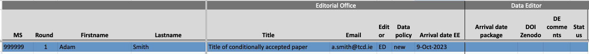
EO logs meta data of replication package.Step 2. Data Editor (Florian): Acquisition of package
Florian receives an automated message that a new paper has arrived which needs to be checked for reproducibility. He creates a new folder inside the shared dropbox folder EJ-2-submitted-replication-packages (EctJ-2-submitted-replication-packages for EctJ) named with the main author’s last name and their MS number, and sends a file request link to the author via email. In practice, the folder is named like
Smith-XXXXXXXX-R1for round 1.
As a reminder, the dropbox folder structure is as follows:
.
├── EJ-1-key-documents
├── EJ-2-submitted-replication-packages
├── EJ-3-replication-reports
├── EJ-4-background-documents
├── EJ-5-back-office-data-editor
├── EJ-6-good-to-go
└── EJ-7-published-packagesAfter successful arrival of the package, Florian logs arrival date package in the SS.
Step 3. Data Editor: Replicator Assigment
The DE picks a replicator by setting the following fields on the spreadsheet:
- Status: when assigning it to replicators, status should be A (for assigned).
- Checker: pick one of the available replicators
- Date assigned: the date at which this Replicator Assignment is performed.
After those fields have been entered, the Data Editor section of the spreadsheet turns white, and the replicator’s part turns green. Florian usually sends a short email to the replicator indicating that a new paper has been assigned, but it is the job of the replicators to regularly check whether they have papers assigned. This is illustrated in figure Figure 2.
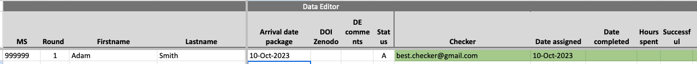
DE logs meta data of replication package.He then leaves a note on EE as shown in figure Figure 3. Notice that this happens after the article has been assigned to replicators!
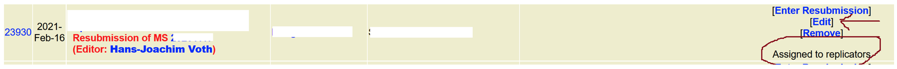
EE HT on behalf of the DE. Notice manual addition of comment.Step 4. Replicators
Replicator Availability
👉 in shared spreadsheet SS in tab Replicator-Availability
- The replicators declare their current availability to handle papers in the corresponding section of the
SSon tabReplicator-Availability, by modifying columnAvailable to take on today. The other columns are computed automatically based on the current workload of the replicator, in order to help Florian assigning replicators efficiently. This also allows replicators to be idle if they need to be so.
Replicator Skills
👉 in shared spreadsheet SS in tab Replicator-Skills
Replicator Timeline
- As noted above, the day a paper is assigned to a replicator, their section of the google sheet becomes green. Five days after the paper has been assigned to the replicator, it automatically turns yellow, and 10 days after assignment it turns red.
- Our target is for the replicator to complete any given package within 7 days. The color scheme is supposed to help replicators manage this deadline, see figure Figure 4.
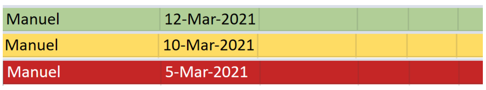
Replicator Workflow
Notice that this section is close to identical whether the replicator uses their own machine or the cloud based nuvolos system
- Navigates to shared
DBfolderEJ-2-submitted-replication-packages, and looks for the correct submission number and Author names. - From that folder, downloads a copy of entire package to their local drive. Notice that
EJ-2-submitted-replication-packagesis read-only on the dropbox, so replicators are forced to do their work outside of it. - Replicator starts clock.
- Replicator studies the package.
- This will involve a very close reading of the
READMEfile. - It will also involve a quick reading of paper and appendices:
- To get an overview of what the required outputs of the replication package are. This includes all figures, tables and other numerical results.
- To carefully check the data citation practice. All datasets need to be cited like any other reference (i.e. like a cited paper).
- Next, follows contained instructions, and tries to reproduce all results in the paper. If the contained instructions are insufficiently precise so that after 60 minutes the replicator has not gained an understanding of how certain results can be reproduced, we abort and go to the next step. This does not include actual runtime, which can be significantly longer.
- This will involve a very close reading of the
- Replicator stops clock. (If program requires significant runtime, this is not billed as replicator time.)
- Fills in reproducibility report, a template for which is stored in shared
DBat3. Replication reports - Fills in corresponding section of
SSwith relevant data:- Completion date
- Time spent (in hours. 1.9 hours is 1h 54min): This information will determine the replicators payment.
- Whether the checks were successful or not (Y/N)
- List the software used. Multiple softwares in comma separated list like
stata,fortran,matlab. Do not include versions, likestata 18 (MP2). - The type of Data Statement that should be published with the paper. This can be one of
A,S,T,Por the combinationsA;T,A;S,A;S;T. The meaning of each is explained in tab Codes ofSS.
- Replicator turns switch
Statusfrom A (assigned) to B (back to DE)
In short, the Replicator fills out the part of the SS shown in figure Figure 5.
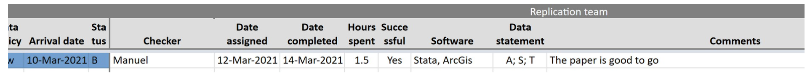
Replicator: Precise Guidelines
This section provides some guidelines for what a replicator should look out for in a package, and things which may be included in their report to the DE.
Any of those conditions not met means that the replicator can comment on it in their report. All conditions go under the common heading making replication less cumbersome.
- The
READMEneeds to contain all necessary information to reproduce the findings in the paper. It should not be required to read the actual source code in order to find out which part of the code produces with part of the output. - The produced output should appear in a clearly designated location, ideally a separate folder called
output. - The produced output should be easy to identify via filename. For example, figure 1 in the paper should correspond to
output/figure1.pdfin the package. - The package must contain all primary data sources. This is particularly important for cases like we downloaded the data from www.xyz.com couple of years ago. The data might no longer be available at this location, or it may be hard to find.
- The
READMEshould contain a clear description of the full data processing pipeline, starting with reading the primary data sources, processing codes and intermediate results, ending in final outputs. - The replication package should save produced output to files, and not only display results on screen, because this makes it very cumbersome to find and verify single outputs in the paper.
- The
READMEshould contain a clear description of the steps one needs to perform to replicate each result in the paper/appendix. A single driver script (for examplemaster.doorrun.m) is convienient, however, the gold standard is a table like the following:
| Output in Paper | Output in Package | Script/Program to execute |
|---|---|---|
| Table 1 | output/tables/table1.tex |
code/table1.do |
| Figure 1 | output/plots/figure1.pdf |
code/figure1.do |
| Figure 2 | output/plots/figure2.pdf |
code/figure2.do |
Step 5. Data Editor Decision
Florian reviews the replicator’s report, sends a final decision to the authors, including the report, and, if revisions are needed, summarizes the content of the report. If further revisions are needed, Florian changes the status to “R” (Revision) or “M” (Minor changes), depending on whether the revisions will require sending the package back to the replicators (“R”) or not (“M”), and fills the corresponding information on the decision section:
- Date Decision taken
- Decision Code:
AAccept,RMajor Revision,MMinor revision and short description
Step 6: Package Resubmissions - EO and DE
Messages from the DE to authors inviting changes to the package and resubmission contain two points:
- A letter to the Data Editor in pdf format must be submitted to EE, clearly addressing all points raised.
- After the letter is successfully received on
EE, the author will receive a new file request link to submit the revised package.
Internally, we follow the same steps as with first time submissions:
EOlogs the return of package upon receiving the letter onEEby copying the first 9 cells of the rejected version of the paper, and pasting it at the bottom of the spreadsheet, incrementing theRoundfield by 1, and logging the correctarrival date EE, as shown in figure Figure 6.- The
DEis again alerted automatically and sends the file request link to the authors.
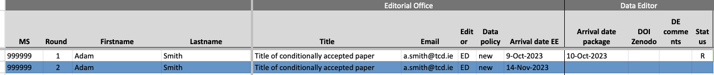
EO logs resubmitted paperThe DE takes care of logging the fields concerning resubmission date:
- In case a package is resubmitted for the first time, the date of re-submission will be included to close this entry, and a new entry (row) will be created with revision number equal 2. If the re-submission is a minor comment, Florian changes the Status as described below but do not change the code of the Decision section. If the initial outcome of this iteration is already accept, mark the code as “A”, and introduce the current date also as re-submission date, as in figure Figure 7.
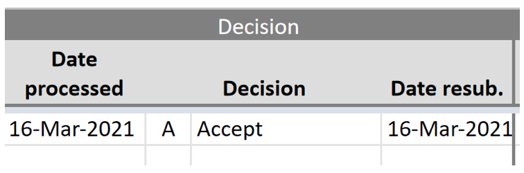
DE upon resubmission.- If no further revisions are needed, Florian notifies the authors accordingly and changes the status of the google sheet to “AP” (acceptable package).
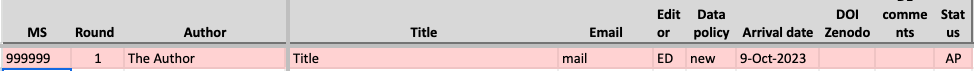
DE sets status to Acceptable Package- Next, the package returns to the
EOfor plagiarism checks and final communications with the authors. After this,EOsets the status field toNT(meaning ready for publication but Not Transferred yet). At that point, the first section of the google sheet turns yellow:
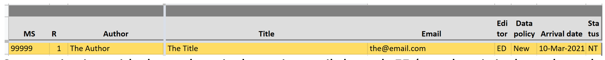
EO sets status to Not Transferred StatusStep 7. Editorial Office: Request Zenodo Upload
EO sends an email to the authors via EE (copying Florian and Brooke) with a request to upload the package to the EJ community at Zenodo, as indicated on the DE’s website.
EO adds an important reminder for the authors in their message:
It is very important that you do no longer modify the contents of your replication package. This includes adding, removing, or editing contained files and folders. The EJ Data Editor team will compare the digital fingerprint of the files you publish on zenodo.org against the fingerprint of the final version of your package, which the Data Editor accepted. Those digital fingerprints need to match.
This reminder is also on the DE’s website.
This digital fingerprint is the so-called md5sum, which can be used to compute a unique checksum of a set of data. This technology is widely used in (open source) software distribution, in order to certify integrity of downloaded software. For example, each R package has an associated md5 checksum. On zenodo, this is displayed as follows:
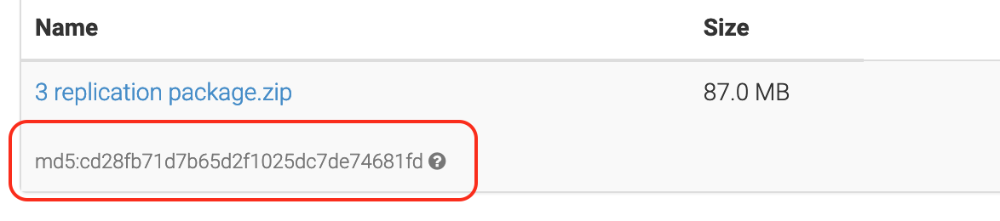
We will compute our version of the md5 string on the finally accepted version of the replication package, located here in the shared DB:
├── EJ-2-submitted-replication-packages
├── Lastname-XXXXXXXX-R3
├── 3-replication-package.zipThe computation of the md5 on our side is straightfoward. On a Linux command line one would run
$ md5sum 3-replication-package.zip
93b6634a97954d6cbfefa56f9dff315e The string "93b6634a97954d6cbfefa56f9dff315e" needs to match the string on zenodo, or the paper will not be released for publication.
This only works if the authors created the zip file on their computer, that is, if the archive 3-replication-package.zip was part of their last submitted package. If, for instance, they submit 3-replication-package (no zip!!), and we create the zip archive for them, the md5 sum will be different!
Step 8. Editorial Office: Return to ME
After the EO completes the plagiarism checks, as per agreement with the MEs, the EO makes the final acceptance of the paper (unless the authors have changed the content of the paper during replication checks, in which case it is sent back to the ME for approval before final acceptance). After which it is transferred to Oxford University Press (OUP) for publication by the EO. When the file is transferred to OUP, it is marked in the system with a status of “P”, after which the entry turns green:
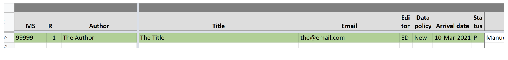
EOAppendix: Conditional Acceptance Message Template
Dear Author:
I am pleased to inform you that I have decided to “conditionally accept” your submission, MS XXXXXXX, titled “The Title” for publication in the Economic Journal. This means that your paper has been accepted for publication on the condition that it passes the applicable checks (reproducibility of results and anti-plagiarism).
[SPACE FOR PERSONAL MESSAGES TO AUTHORS]
Your final submission will be checked with anti-plagiarism software. At this stage, you are required to submit all relevant files for production and replication, accompanying files such as material for the online appendix and any data and data documentation files, as per our replication policy at: https://academic.oup.com/ej/pages/General_Instructions#data.
Next, I am asking you to submit the final version of all your files in two consecutive steps: Your paper and any appendices together with a signed checklist via Editorial Express, and your replication package via a file request link directly to our Data Editor (see below).
Step 1: Submission of Paper via Editorial Express
On Editorial Express, you should submit a single zip file containing three objects: two directories and one pdf file which you signed, as follows.
1-paper: A directory containing all source code needed to compile your paper named in the appropriate way. In particular, please includeMSXXXXXXXX-main-YYYYMMDD.texandMSXXXXXXXX-main-YYYYMMDD.pdf, as well as all required input files (graphs and tables etc.) - MSXXXXXXXX being your manuscript number, andYYYYMMDDstanding for the date of final submission in ISO format.2-appendix: Directory containing sources for appendices - if applicable - following the same naming convention as above.checklist.pdf: the signed checklist https://bit.ly/3Qa0HW5 .
In preparing the final version of your paper, please consult the instructions for authors at: https://bit.ly/3ivH38d to make sure your final submission conforms to the journal’s requirements. For creating manuscripts in LaTex, The Economic Journal strongly recommends the use of its TeX template which is downloadable at: [h9https://bit.ly/3g2YBaB)]
Step 2: Submission of Replication Package via file request link
After having received your final version of paper and appendices together with the signed checklist on Editorial Express (Step 1 above), our data editor will initiate the replication checks process by sending you a file request link, where you will be able to upload your replication package, as soon as your are ready to do so.
Before you start to prepare your replication package, please consult the EJ Data Editor website for comprehensive guidance and step-by-step instructions: https://ejdataeditor.github.io.
Further Steps
Once I have received all supporting documents along with confirmation that the paper has passed the appropriate checks, I will formally accept the paper for publication. At which point, the paper can be listed as “forthcoming” and your files will be sent to Oxford University Press for production. Now is also a good time to update the information on your website about the paper and inform the authors you are, or will be, citing in the paper. It is now in your and our best interest to increase the impact of your paper as much as possible.
Thank you very much for your contribution to the Economic Journal. I look forward to seeing it in print.
Sincerely,
Your Managing Editor